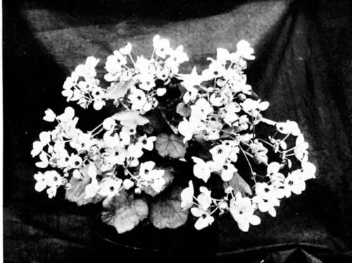

XXI. Begonias. Continued
Description
This section is from the book "Indoor Gardening", by Eben E. Rexford. Also available from Amazon: Indoor Gardening.
XXI. Begonias. Continued
Rubra is an old variety, but still one of the best. It has very thick, dark green foliage, attractive in itself, and flowers of a bright coral-red, produced the year round in great profusion. This variety can truly be called an ever-bloomer. It grows to a height of four, five, and often six feet, branching freely. A fine specimen will often fill a large window if given plenty of elbow-room. It does not like to be crowded.
Weltoniensis is a summer flowering variety. Its leaves are of a rich, almost translucent green, veined with red. Its stalks are also red. Its flowers are a soft, bright pink, produced in great profusion, It is not easy to imagine anything more beautiful than a well-grown plant of this kind in full bloom.
Manicata aurea is one of the most beautiful of all variegated plants. Its leaves, which are very large, and of a thick, waxen texture, are irregularly blotched and splashed with creamy white and soft yellow on a rich, dark green ground. Often tints of pink and red show among the other colors. This variety has a most peculiar habit of growth. When young, and small, the plants generally are upright, but after a little they send out crooked, gnarly branches which droop over the pot and twine about it and themselves in snake-like fashion. So suggestive of snakes are they that they would be positively unpleasant to look at if naked, but they are almost completely hidden by their luxuriant foliage. This sort blooms profusely in spring, throwing up great, spreading panicles of small pink flowers in such quantities that they often cover the foliage like a veil.
Speculata is a hybrid between the Rex and the tall-growing classes. It has the foliage of the former and the habit of the latter. Its large leaves are shaped like those of the Grape, with sharp points. They appear green when seen in some lights, but on closer examination the green seems to be underlaid with chocolate, against which veins of pea-green stand out prominently, with silver spots thickly scattered over the surface. On account of its changeable color when viewed in different positions, it is a most attractive plant.
Gigantea is one of our best bracket plants. It has enormous foliage of a dark reddish green, borne on stalks often three feet in length. If the bracket on which the plant is grown is placed well up the wall, the foliage will droop in rugged grace, and show to the best effect. If kept on the window-sill it is not satisfactory, its habit of growth not being adapted to such a position.
Gloire de Sceaux is a variety of late introduction. Its leaf is a dark bronze above, with brownish red below. The foliage is almost round, and quite as large as that of most Rex Begonias. It blooms with remarkable profusion from January to May, its flowers being borne in sprays. In color they are a deep pink. Whether in bloom or out of bloom it makes a most charming house-plant.
Gloire de Lorraine is a comparatively new variety, and represents a class quite distinct from anything heretofore grown. Though having been recently introduced, it has already taken the flower-loving public by storm. No plant of which I have any knowledge has made such a rapid leap into popularity, and its popularity is richly deserved. It does not make a plant of large size, but it bears so many flowers that each plant seems a great bouquet of soft, rich carmine bloom, this color often fading to delicate rose. Because of its peculiar habit during the early stages of its growth it is not adapted to amateur culture during the year, but should be procured of the florists in October, when wanted for winter flowering.
Begonia Gloire De Lorraine.
The above list contains only a few of the most desirable varieties. By consulting the catalogues of the florists you will find many other charming kinds described there, all of which are good.
Complaint is frequently made that plants drop their foliage. This behavior is to be accounted for in nearly every case by one of three things: Too much water at the roots, too little water, and abrupt change of conditions, as from out to indoors in fall, or from the greenhouse where the air is moist to the living-room where it is likely to be quite dry. Trace the difficulty back to its cause by careful observation, and give that corrective treatment which a discovery of the cause of trouble will readily suggest. In the first instance either better drainage or less water, in the second regularity of watering, and in the third more moisture in the air and the avoidance of abrupt changes of temperature.
Since the above was written I have received a very interesting letter from a lady who tells me how she grows her Begonias. She sets her plants in the ground in May, in their pots. Old ones are cut down, and new ones grown from the branches cut off. If the pots are filled with roots the plants are shifted to large pots. They are left out of doors until October when she returns to the city. Then she lifts them and places them in sunny windows with lace curtains between them and the glass. The first part of the season she feeds her plants well. The latter part of it she gives only water. Her plants are the wonder of the professional florist.
From what this correspondent writes some readers of "Indoor Gardening" may gain some pointers which will be of benefit to them in their culture of this popular plant.
Continue to:
- prev: XXI. Begonias
- Table of Contents
- next: XXII. The Fuchsia